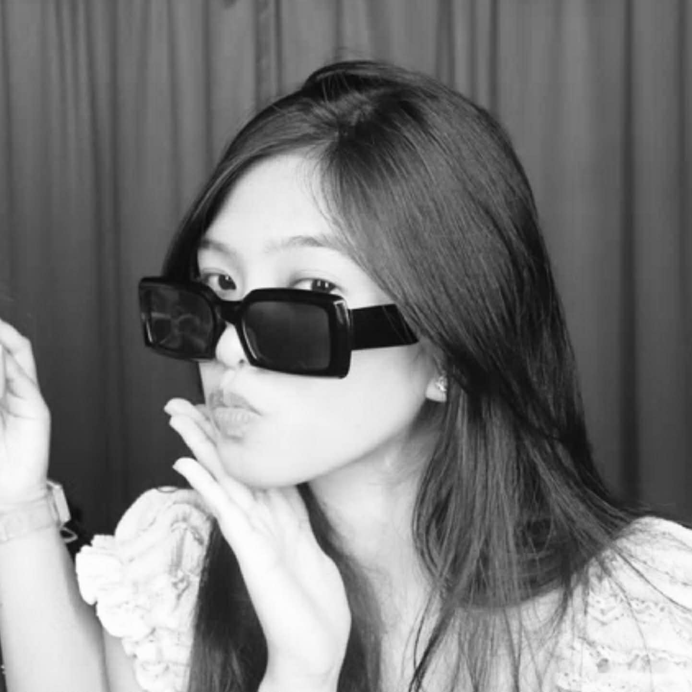
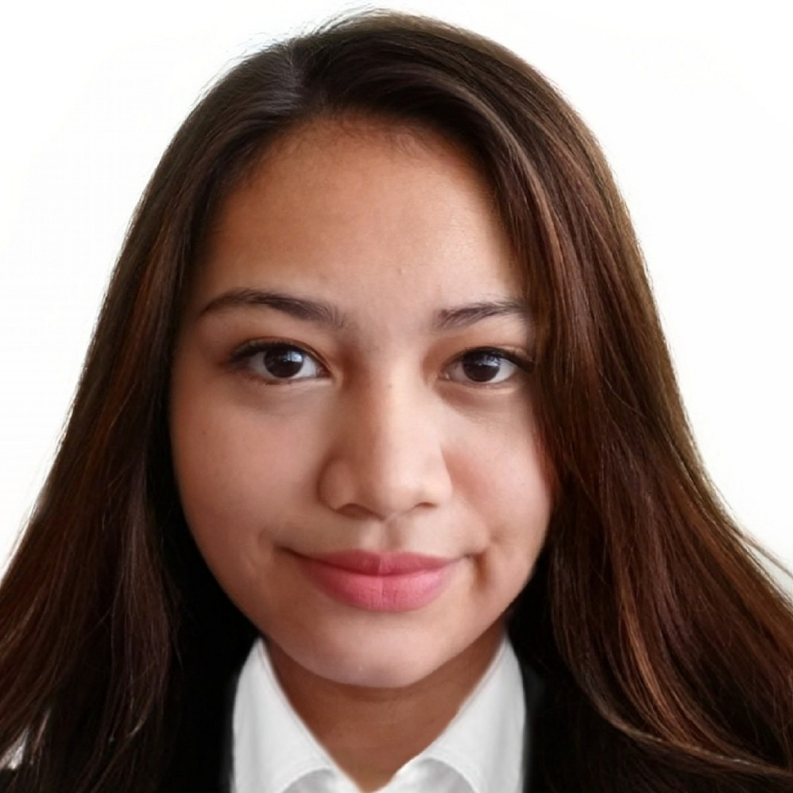
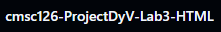

Behind every website are people who made it possible to bring ideas to life.
This page showcases the members of the group, their roles, and includes a link to the GitHub repository.
Meet the Team |
|
|---|---|
|
 Nicole Ashley R. Dy She handled the Home page and the Gallery page of the website. |
 Claire Dane D. Vincoy She handled the Videos Link page and About Us page of the website. |
View the GitHub repository for this website through the link below:
